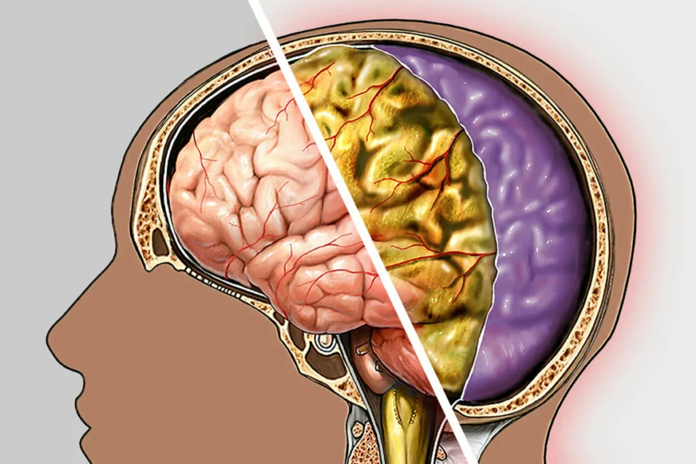
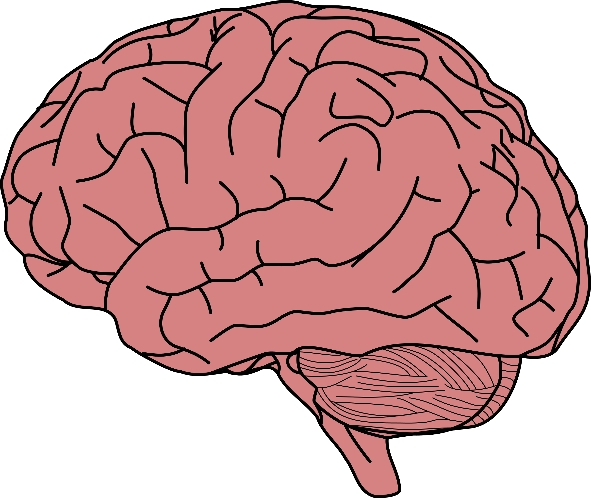
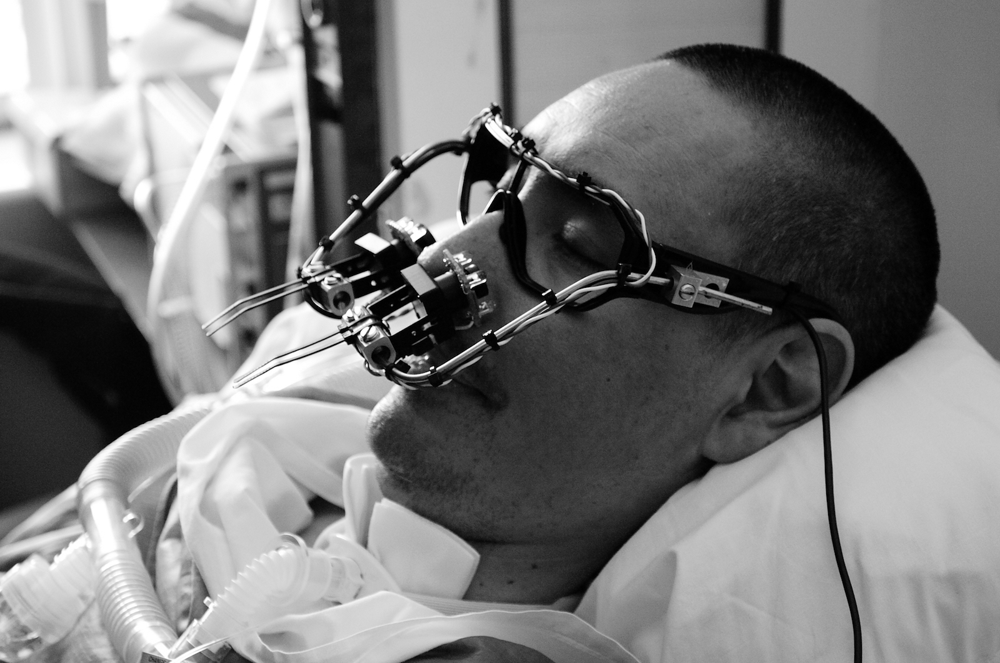
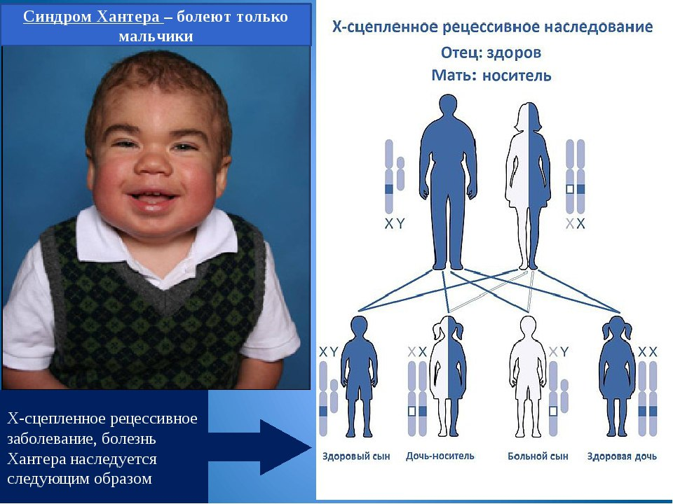

Мигрень
|  |
ОписаниеМигрень — это неврологическое заболевание, характеризующееся приступами интенсивной головной боли, часто сопровождаемыми тошнотой, рвотой и повышенной чувствительностью к свету и звуку. СимптоматикаСимптомы мигрени могут включать пульсирующую боль, ауру, тошноту, рвоту, чувствительность к свету и звуку. ЛечениеЛечение мигрени может включать прием обезболивающих, триптанов, противорвотных и профилактических препаратов. |
Менингит
|
Менингит — это воспаление оболочек головного и спинного мозга, которое может быть вызвано бактериальной, вирусной или грибковой инфекцией. Симптомы менингита могут включать лихорадку, головную боль, ригидность затылочных мышц, тошноту, рвоту и светобоязнь. |
СимптомыЛечение менингита может включать прием антибиотиков, противовирусных или противогрибковых препаратов, в зависимости от причины. |
Синдром замкнутости
|  |  |
ОписаниеСиндром замкнутости — это неврологическое состояние, при котором человек находится в сознании, но не может двигаться или говорить, за исключением движения глаз. СимптоматикаСимптомы синдрома замкнутости могут включать паралич всех конечностей, невозможность говорить, но сохранение сознания и способности двигать глазами. ЛечениеЛечение синдрома замкнутости направлено на поддержку жизненно важных функций и улучшение качества жизни пациента. Часто требуется специализированная помощь и оборудование. |
 |